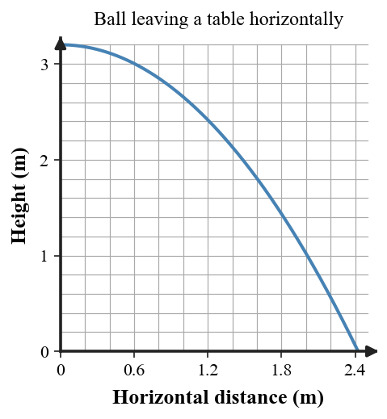

Students will analyze how forces affect motion by applying Newton’s Second Law, distinguishing mass from weight, explaining friction and air resistance, comparing free fall and nonfree fall, identifying action-reaction force pairs, and modeling projectile motion using horizontal and vertical components.
| Rung | I Can Statement | DOK | Level |
|---|---|---|---|
| 8 | I can design, defend, or critique a complete force-and-motion model for an unfamiliar real-world situation using force diagrams, Newton’s laws, motion evidence, and formulas. | DOK 4 | Above |
| 7 | I can compare competing explanations of a force, friction, falling, interaction, or projectile scenario and justify which explanation better fits the evidence. | DOK 4 | Above |
| 6 | I can connect force diagrams, motion descriptions, data tables, and formulas to explain how forces change motion. | DOK 3 | Essential |
| 5 | I can identify and correct misconceptions about Newton’s Second Law, friction, mass and weight, air resistance, Newton’s Third Law, or projectile motion. | DOK 3 | Essential |
| 4 | I can calculate force, mass, acceleration, weight, net force with friction, or basic projectile quantities in simple situations and interpret the result. | DOK 2 | Essential |
| 3 | I can interpret force diagrams, interaction diagrams, free-fall diagrams, and projectile-motion models. | DOK 2 | Essential |
| 2 | I can define and recognize key terms such as net force, acceleration, mass, weight, friction, air resistance, terminal speed, interaction, and projectile. | DOK 1 | Essential |
| 1 | I can recognize whether a situation involves speeding up, slowing down, balanced force, unbalanced force, falling motion, or an interaction between objects. | DOK 1 | Essential |
Format: 3–5 minute warm-up, quick check, image prompt, vocabulary check, mini-whiteboard response, card sort, or exit ticket
Purpose: Check whether students can recognize basic force-and-motion vocabulary, classify simple situations, and distinguish force, mass, weight, friction, air resistance, interactions, and projectile motion.
Complete the statement: Newton’s Second Law relates net force, mass, and __________.
A box slides across a rough floor and slows down. Name the force that opposes the sliding motion.
Which quantity changes when the same object is moved from Earth to the Moon: mass, weight, or both?
Name the term for the constant falling speed reached when air resistance balances weight.
A swimmer pushes water backward and moves forward. Name the Newton’s Third Law idea illustrated by the two forces.
Complete the statement: A projectile’s horizontal motion is combined with __________ accelerated motion.
Classify a parachutist falling with large air resistance as free fall or nonfree fall.
A pushed box does not move because friction matches the push. Are the horizontal forces balanced or unbalanced?
Format: Exit ticket, graph or diagram interpretation, short calculation, data-table task, partner check, whiteboard response, or force-model task
Purpose: Check whether students can apply Newton’s Second Law, interpret force diagrams, calculate simple quantities, and connect force models to motion.
A 5 kg cart has a net force of 25 N. Calculate acceleration using $a=\frac{F_{net}}{m}$ and explain what the value predicts about the cart’s motion.
A 4 kg object accelerates at $3\text{ m/s}^2$. Find the required net force with $F_{net}=ma$ and explain the direction relationship between net force and acceleration.
A worker pushes a crate right with 70 N while friction is 25 N left. Calculate $F_{net}$ and explain how friction changes the acceleration compared with a frictionless floor.
An 8 kg object is near Earth. Use $W=mg$ with $g\approx10\text{ N/kg}$ to find its weight and explain why weight is a force rather than an amount of matter.
A falling object has 60 N of weight downward and 22 N of air resistance upward. Find the net force and explain whether it is still accelerating downward.
Sketch and label weight, support force, and friction for a box sliding right after a push has ended. Explain which force changes the horizontal motion.
A student pushes a wall with 45 N. Determine the wall’s force on the student and explain why these two forces do not cancel on one object.
A ball leaves a table horizontally at 3 m/s and is in the air for 0.8 s. Calculate its horizontal range with $x=v_xt$ and explain why horizontal and vertical motions can be analyzed separately.

Format: Constructed response, misconception analysis, CER, ranking task, diagram critique, graph explanation, gallery walk, or group whiteboard defense
Purpose: Check whether students can reason strategically, explain cause and effect, connect multiple representations, and correct common force-and-motion misconceptions.
A student says, “A net force is needed to keep an object moving.” Critique the statement and distinguish force-caused acceleration from motion itself.
Explain why an astronaut’s mass can stay the same on the Moon while the astronaut’s weight decreases.
A skydiver reaches terminal speed. A student says gravity has stopped acting. Explain the error using weight, air resistance, and net force.
In a collision, a truck pushes on a small car and the car pushes on the truck. Explain why the force pair can be equal even though the accelerations are very different.
A person pushes a crate, but it remains at rest until the push becomes large enough. Explain the role of static friction and what changes once the crate starts sliding.
A falling object has upward air resistance. Explain why the direction of air resistance does not tell you the object is moving upward.
A package leaves a conveyor belt horizontally and falls toward the floor. Explain how the horizontal component of its motion can remain steady while gravity changes the vertical component.
A projectile model shows horizontal velocity arrows shrinking as the ball falls. Analyze the model and explain what should happen if air resistance is ignored.
Format: Performance task, extended response, investigation reflection, modeling task, critique task, or strategy defense
Purpose: Check whether students can synthesize force diagrams, interaction pairs, motion data, formulas, projectile models, and conceptual explanations in unfamiliar real-world situations.
A ramp cart has dots that get farther apart while moving downhill. Build a force-and-motion explanation that connects net force, mass, acceleration, and the spacing pattern.
Two parachutes carry equal weights but have different surface areas. Build a model predicting which reaches terminal speed sooner and defend the role of air resistance.
Design a short test comparing how two different masses accelerate under the same net force. State what you would control, measure, and expect to observe.
A delivery worker pushes a heavy crate. It first stays still, then begins sliding and becomes easier to keep moving. Build an explanation using static friction, sliding friction, net force, and acceleration.
Define the system as “boat plus paddler” while the paddle pushes water backward. Identify the action-reaction pair and decide whether the water’s force is internal or external to that system.
A student wants to predict where a ball rolling off a table will land. Describe the measurements needed, the horizontal/vertical relationships to use, and one limitation of the model.
Compare two explanations for why a heavier cart accelerates less than a lighter cart under the same net force. Choose the explanation consistent with Newton’s Second Law and justify it.
Create a corrected model for a falling object that transitions from increasing speed to terminal speed. Describe how weight, air resistance, net force, and acceleration change during the fall.